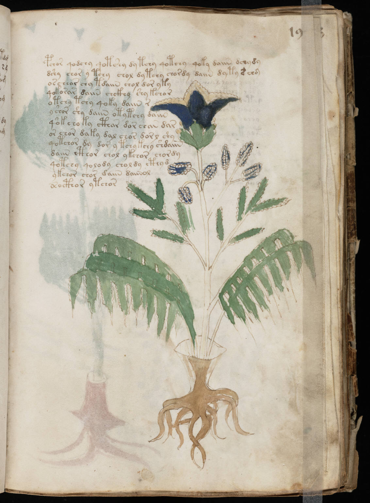

f19r
1pchor qodchy qotshy dy tchy qotchy qoky daiin dchydy2dshy chor y tchy chol dytchy chordy daiin dyty s choy3oscheor shy tdaiin chol dor yky4qokorar daiin chckhy shy kchor5otchy tchy qoky daiin r6y shor shy daiin otytchy daiin7qokcho ky cthar dor chan dar8or chor daky dal chor dorl shy9qotchor dy dor y tchykchy shdaiin10daiin cthor chol ykchor chordy11qotchy qolody choldy cthyd12ykchor chor daiin daiinol13osocthor ytchor
